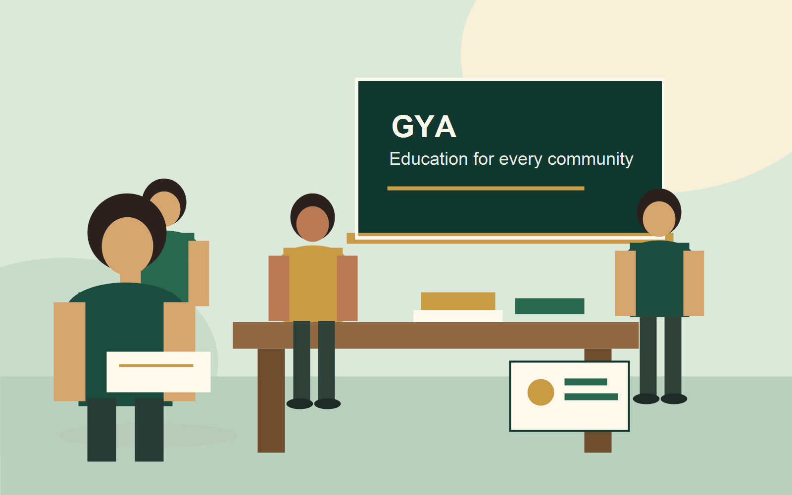

배움의 공간
영어와 컴퓨터 수업을 중심으로 학생들이 매일 공부할 수 있는 안정적인 환경을 만듭니다.
 글로컬여성커뮤니티
Glocal Women Community
글로컬여성커뮤니티
Glocal Women Community

About GWC & GYA
GWC는 지역의 작은 필요를 꾸준한 교육 지원으로 연결하는 비영리 민간단체입니다. GYA English Learning Center는 뚬놉 지역 아이들이 학교 밖에서도 안전하게 배우고, 관계를 맺고, 자신감을 키우는 방과후 센터입니다.
영어와 컴퓨터 수업을 중심으로 학생들이 매일 공부할 수 있는 안정적인 환경을 만듭니다.
축구팀, 운동회, 그림대회, 영어스피치, 문화체험을 통해 교실 밖의 자신감을 기릅니다.
후원금은 수업, 교재, 컴퓨터교실, 축구팀, 연간 행사와 현장 운영에 사용됩니다.
Programs
기존 홈페이지의 활동 자료를 바탕으로, 방문자가 바로 이해할 수 있게 핵심 프로그램을 정리했습니다.
알파벳과 발음부터 문장 만들기, 읽기, 발표까지 단계별로 배웁니다.
PC 10대를 활용해 문서 작성과 디지털 기초 역량을 익힙니다.
유소년·유소녀 축구 활동으로 협동심, 체력, 공동체성을 함께 키웁니다.
그림그리기대회, 시엠립 방문, 운동회, 앙코르와트 문화체험을 이어갑니다.
Activity Details
GYA의 활동은 한두 가지 프로그램이 아니라 매일의 수업, 운동장 활동, 연간 이벤트가 함께 이어지는 구조입니다.
학생들의 수준에 맞춰 알파벳, 발음, 기초 단어, 문장 만들기, 읽기와 발표까지 단계적으로 배웁니다. 영어 스피치 활동은 아이들이 배운 내용을 자기 목소리로 표현하는 기회가 됩니다.
PC 10대를 활용해 타자, 문서 작성, 디지털 기초 활용을 익힙니다. 컴퓨터교실은 학생들이 학교 밖에서도 미래 역량을 경험할 수 있게 해주는 중요한 활동입니다.
GYA는 유소년 축구팀과 유소녀 축구팀 활동을 통해 학생들이 함께 뛰고, 규칙을 배우고, 서로를 응원하는 경험을 쌓도록 돕습니다.
정기 수업 외에도 그림그리기대회, 운동회, 시엠립 방문, 앙코르와트 문화체험 같은 행사를 통해 아이들이 더 넓은 세상을 보고 자신의 생각을 표현하도록 돕습니다.
Photo Gallery
동영상뿐 아니라 수업, 센터, 운동장, 행사 사진을 함께 보여주면 후원자가 현장을 더 선명하게 이해할 수 있습니다.

코로나 팬데믹 이후 새롭게 단장한 GYA에서 학생들이 다시 배움을 이어갑니다.

수업, 돌봄, 친구들과의 관계가 매일 반복되며 안정적인 성장 경험을 만듭니다.

그림그리기대회, 시엠립 방문 같은 이벤트는 아이들이 세상을 넓게 만나는 시간입니다.

센터의 역사와 학생들의 변화는 GYA가 꾸준히 이어온 시간의 증거입니다.
News & Notice
씨오쟁이 홈페이지의 소식 메뉴처럼, 새 공지와 활동 보고를 모아둘 수 있는 영역입니다. 지금은 대표 소식 카드로 시작하고, 이후 실제 게시글이나 블로그 링크로 확장할 수 있습니다.
Activity Videos
원래 홈페이지에 공개된 GWC & GYA 활동영상 중 대표 콘텐츠를 먼저 볼 수 있게 배치했습니다.
Support
일회성 후원과 매월 정기후원이 가능합니다. 후원금은 GYA 수업, 교재, 컴퓨터교실, 축구팀, 문화체험, 현장 운영비로 사용됩니다.
예금주: 글로컬여성커뮤니티
매월 정기 후원 또는 일회성 후원이 가능합니다.
후원 페이지 열기Transparency
후원자가 안심하고 함께할 수 있도록 외부 공시와 공식 기관 링크를 별도로 모았습니다. 국세청 공익법인 공시에서는 단체명을 검색해 결산서류와 기부금 사용 내역을 확인할 수 있습니다.
Contact
후원, 방문, 자료 요청, 협력 문의는 아래 공식 연락처로 남겨주세요.
Quick Actions
12회차 강의자료 기준에 맞춰 전화, 문자, 이메일, 길찾기, SNS, 후원 링크를 한곳에 모았습니다.
Assignment Flow
강의자료 기준에 맞춰 이름, 연락처, 이메일, 문의분야, 문의내용을 입력받고 필수값 확인, 개인정보 동의, 제출 중 표시, 접수 완료 메시지가 보이도록 구성했습니다.